Plausibility
Stephen Skalicky
21/07/2021
Today we are going to use some real data collected just a few days ago. This data is a series of plausbility ratings provided for different short stories in English. Here are the instructions participants received:
Plausibility is a measure of how likely you think something can occur. For example, being full after eating a meal is more plausible than being hungry after eating a meal. However, one could still feel hungry after eating a meal. It is just less plausible when compared to being full." Your task is to rate each story you read on a scale of plausability.The scale ranges from 0 (not at all plausible) to 5 (highly plausible). When making your ratings, please consider all aspects of the story.
The data is in the file plausbility_data.csv
You can download the data here
library(tidyverse)
p.data <- read_csv('plausibility_data.csv')## Rows: 800 Columns: 6
## ── Column specification ────────────────────────────────────────────────────────
## Delimiter: ","
## chr (3): story_id, att, condition
## dbl (3): subject, age, rating
##
## ℹ Use `spec()` to retrieve the full column specification for this data.
## ℹ Specify the column types or set `show_col_types = FALSE` to quiet this message.Use str to examine the structre of the data
str(p.data)## spec_tbl_df [800 × 6] (S3: spec_tbl_df/tbl_df/tbl/data.frame)
## $ subject : num [1:800] 1 1 1 1 1 1 1 1 1 1 ...
## $ story_id : chr [1:800] "S11" "S19" "S01" "S02" ...
## $ age : num [1:800] 34 34 34 34 34 34 34 34 34 34 ...
## $ att : chr [1:800] "I don't know" "I don't know" "I don't know" "I don't know" ...
## $ rating : num [1:800] 1 4 0 4 4 4 3 4 4 2 ...
## $ condition: chr [1:800] "by phrase (locative)" "by phrase (locative)" "temporal prep" "locative prep" ...
## - attr(*, "spec")=
## .. cols(
## .. subject = col_double(),
## .. story_id = col_character(),
## .. age = col_double(),
## .. att = col_character(),
## .. rating = col_double(),
## .. condition = col_character()
## .. )
## - attr(*, "problems")=<externalptr>part 1, do you remember how to do this?
Using code (i.e., not looking at the data in the viewer), answer the following questions:
- How many subjects are there? (hint: you can do this in one line using
nrow()andunique()
- What is the mean and sd of their age? (do you remember how to use
summarise()?)
- How many different stories are there?
- How many different text conditions are there? (for 3 and 4 you can use
lenght()oflevels()of a factor)
- Which stories occur in which condition(s)? [this is a trick question - use
table()]
# number of subjects
nrow(unique(select(p.data, subject)))## [1] 40# mean and sd of age
p.data2 <- p.data %>%
select(subject, age) %>%
unique() %>%
summarise(mean.age = mean(age), sd.age = sd(age))
p.data2## # A tibble: 1 × 2
## mean.age sd.age
## <dbl> <dbl>
## 1 33.2 10.6# number of stories
length(levels(as.factor(p.data$story_id)))## [1] 20# number of conditions
length(levels(as.factor(p.data$condition)))## [1] 4# breakdown of stories in conditions
table(p.data$story_id, p.data$condition)##
## by phrase (agentive) by phrase (locative) locative prep temporal prep
## S01 10 11 9 10
## S02 11 9 10 10
## S03 9 10 10 11
## S04 10 10 11 9
## S05 10 11 9 10
## S06 11 9 10 10
## S07 9 10 10 11
## S08 10 10 11 9
## S09 10 11 9 10
## S10 11 9 10 10
## S11 9 10 10 11
## S12 10 10 11 9
## S13 10 11 9 10
## S14 11 9 10 10
## S15 9 10 10 11
## S16 10 10 11 9
## S17 10 11 9 10
## S18 11 9 10 10
## S19 9 10 10 11
## S20 10 10 11 9That was a nice refresher! The point of this data collection was to check whether our manipulation to the stories was effective. Our evidence of this being effective is whether or not one of the conditions received significantly lower plausibility ratings compared to the other three. Specifically, we want to check if stories presented in the by phrase (locative) condition received lower plausbility ratings.
part 2, return of ggplot.
What is the mean and sd of the plausability ratings in each condition? Make a tibble named p.data2 from p.data which reports the mean and sd of the plausibility ratings in each of the four conditions.
p.data2 <- p.data %>%
group_by(condition) %>%
summarise(mean.plaus = mean(rating), sd.plaus = sd(rating))Your output should look like this:
p.data2## # A tibble: 4 × 3
## condition mean.plaus sd.plaus
## <chr> <dbl> <dbl>
## 1 by phrase (agentive) 2.56 1.21
## 2 by phrase (locative) 1.35 1.19
## 3 locative prep 2.58 1.20
## 4 temporal prep 2.33 1.17Have we answered our question? Maybe we also need to visualize it! Let’s create the following ggplot:
ggplot(p.data2, aes(x = condition, y = mean.plaus, label = round(mean.plaus,1))) +
geom_errorbar(stat = 'identity', aes(ymin = mean.plaus-sd.plaus, ymax = mean.plaus+sd.plaus), size = .5, width = .2) +
ylim(0,4) +
coord_flip() +
labs(x = '', y = '', title = "Mean plausbility ratings with +/-1 SD") +
theme(legend.position = 'none') +
geom_label() +
theme_classic()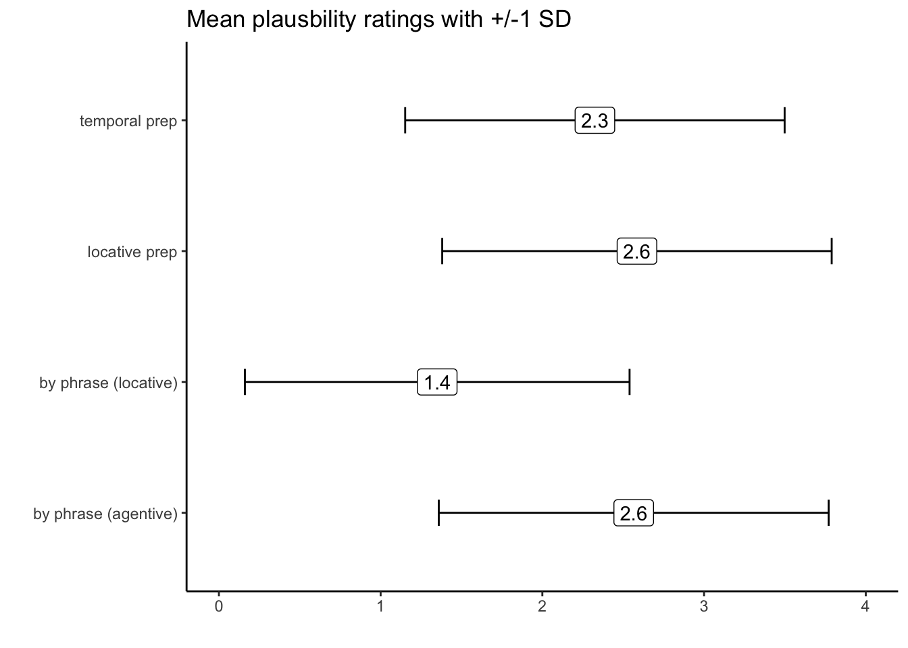
create code
First, create the skeleton of your ggplot. Call ggplot and set the data to p.data2, then within the aes call, choose the correct x and y axes. In case you forgot, our format will be ggplot(data, aes(x = , y = ))
You should see something like this:
ggplot(p.data2, aes(x = condition, y = mean.plaus))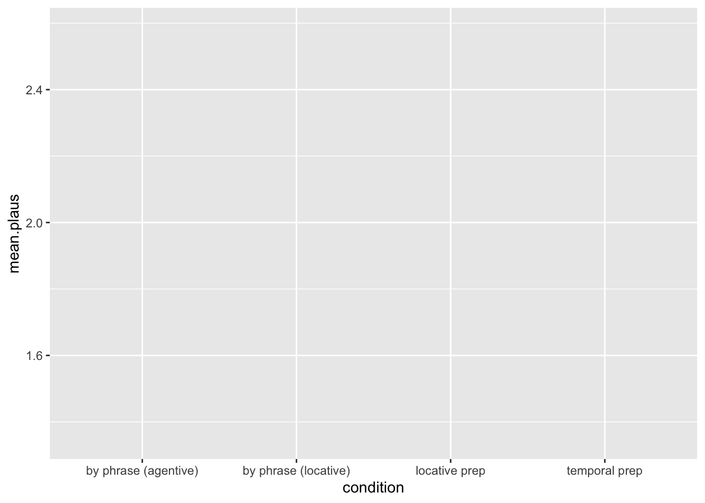
create code
Add a third argument to your aes call, which is label. Using round(), set label to equal the mean plausibility rating, rounded to one decimal. Then, using +, add a geom_label() geom to your ggplot.
You should see something like this:
ggplot(p.data2, aes(x = condition, y = mean.plaus, label = round(mean.plaus,1))) +
geom_label()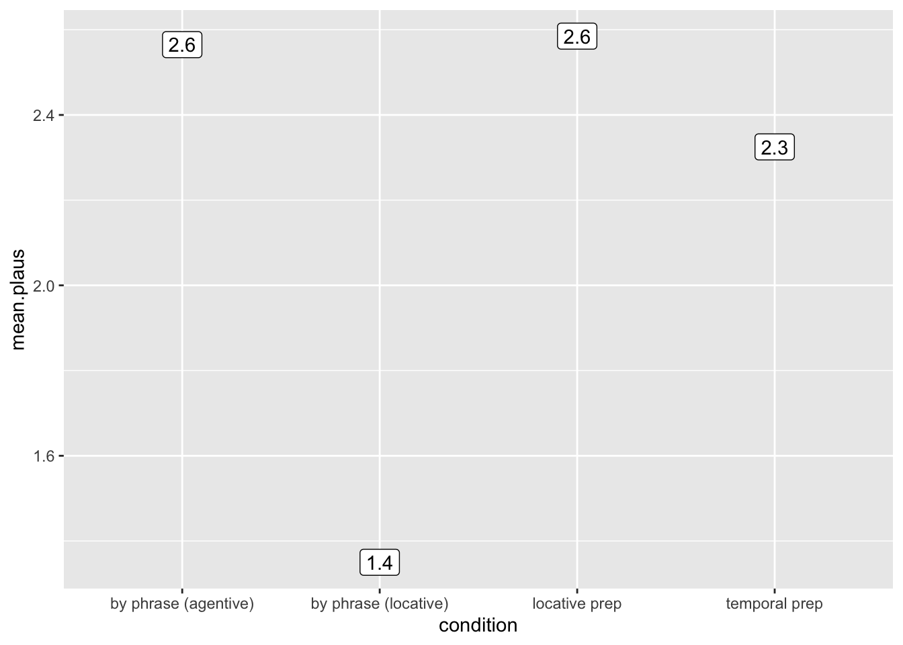
Let’s flip the axes so the plot matches our goal - add a coord_flip to your ggplot (using +)
ggplot(p.data2, aes(x = condition, y = mean.plaus, label = round(mean.plaus,1))) +
geom_label() +
coord_flip()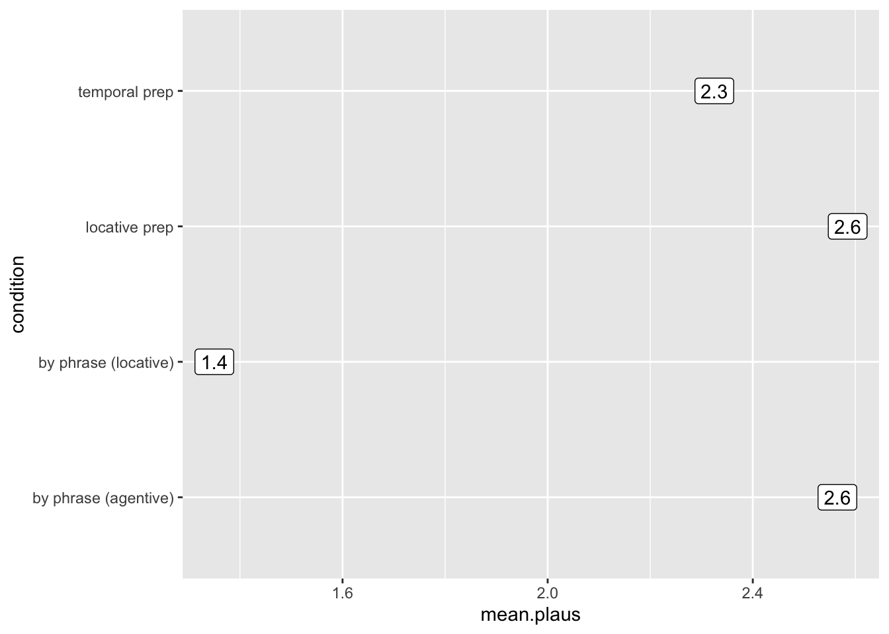
create code
Now let’s fix the y axis to that it covers the entire range of data. The ratings go from 0-4, so that should be the limits of our y axis. Using +, add a ylim() to the ggplot, which includes the range 0,4.
ggplot(p.data2, aes(x = condition, y = mean.plaus, label = round(mean.plaus,1))) +
geom_label() +
coord_flip() +
ylim(0,4)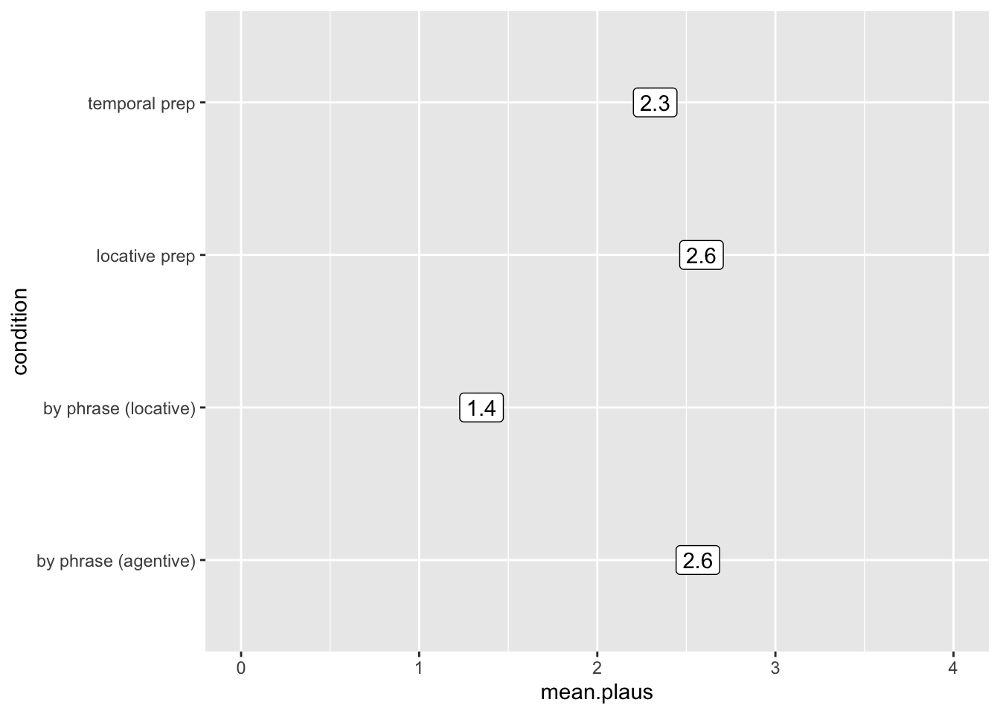
create code
We’re almost there - now we are going to add the errorbars. Luckily we can use geom_errorbar for this! Using +, add a geom_errorbar() to your ggplot.
The geom_errorbar will need you to include this information:
geom_errorbar(stat = 'identity', aes(ymin = ??, ymax = ??), size = ?, width = ?)
The size and width control the appearance of the errorbars - to set them to match my plot, set size to .5 and width to .2.
The ymin and ymax delineate the boundaries of our error bar. We want the errors to range from -1 SD from the mean and +1 SD from the mean. Time for some math - you’ll need to use the variables in p.data2 to set ymin to -1SD from the mean, and ymax to +1SD from the mean.
If you are successful, you will see this:
ggplot(p.data2, aes(x = condition, y = mean.plaus, label = round(mean.plaus,1))) +
geom_label() +
coord_flip() +
ylim(0,4) +
geom_errorbar(stat = 'identity', aes(ymin = mean.plaus-sd.plaus, ymax = mean.plaus+sd.plaus), size = .5, width = .2)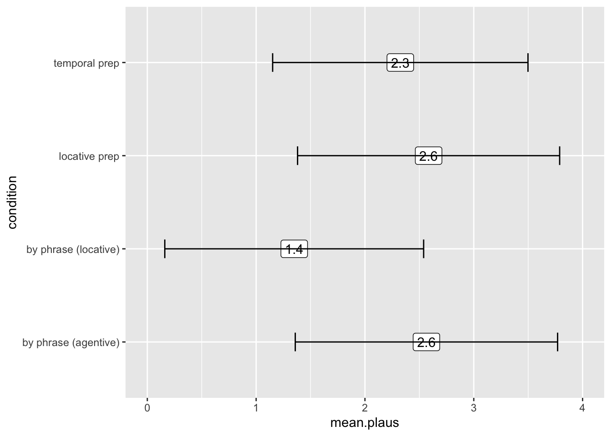
create code
Why do you think the line is covering the label? This gives us insight into how ggplot works - each geom is layered onto the plot in the order that you include it in the code. It kinda sucks having the line go through the number - to fix this, we can adjust our code so that we call geom_label() after we call geom_errorbar(). Move your geom_errorbar() to be the first geom in your ggplot. Make sure you don’t leave a + at the end of your final line!
If you are successful, you will see this:
ggplot(p.data2, aes(x = condition, y = mean.plaus, label = round(mean.plaus,1))) +
geom_errorbar(stat = 'identity', aes(ymin = mean.plaus-sd.plaus, ymax = mean.plaus+sd.plaus), size = .5, width = .2) +
geom_label() +
coord_flip() +
ylim(0,4)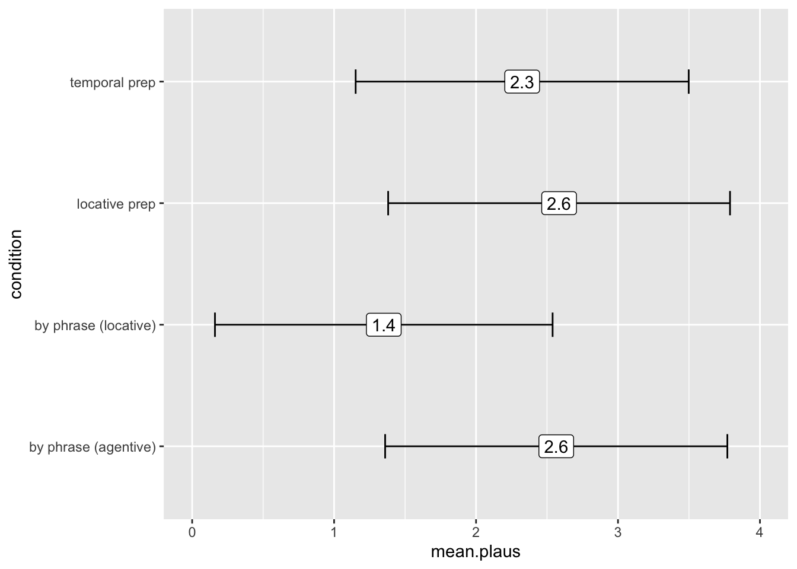
create code
The final steps are aesthetic. Use labs() to set x equal to nothing, y equal to nothing, and title = “Mean plausbility ratings with +/-1 SD”
ggplot(p.data2, aes(x = condition, y = mean.plaus, label = round(mean.plaus,1))) +
geom_errorbar(stat = 'identity', aes(ymin = mean.plaus-sd.plaus, ymax = mean.plaus+sd.plaus), size = .5, width = .2) +
geom_label() +
coord_flip() +
ylim(0,4) +
labs(x = '', y = '', title = "Mean plausbility ratings with +/-1 SD") 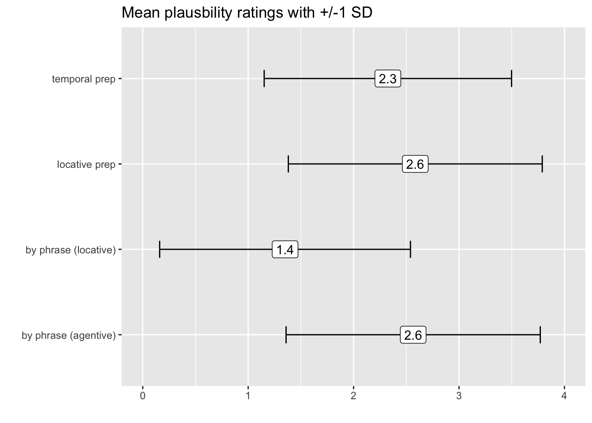
create code
You can also install the package ggthemes and change the theme in the last line using theme_classic()
ggplot(p.data2, aes(x = condition, y = mean.plaus, label = round(mean.plaus,1))) +
geom_errorbar(stat = 'identity', aes(ymin = mean.plaus-sd.plaus, ymax = mean.plaus+sd.plaus), size = .5, width = .2) +
geom_label() +
coord_flip() +
ylim(0,4) +
labs(x = '', y = '', title = "Mean plausbility ratings with +/-1 SD") +
theme_classic()
part 3, return of the violins
Plotting the mean and SD is fine, but it’s also very useful to plot the entire distribution of the data. I want you to recreate this plot:
ggplot(p.data, aes(x = condition, y = rating)) +
geom_violin(aes(fill = condition)) +
geom_jitter(alpha = .5) +
labs(y = 'Plausbility Rating', x = '', title = 'Story plausibility ratings') +
theme_bw() 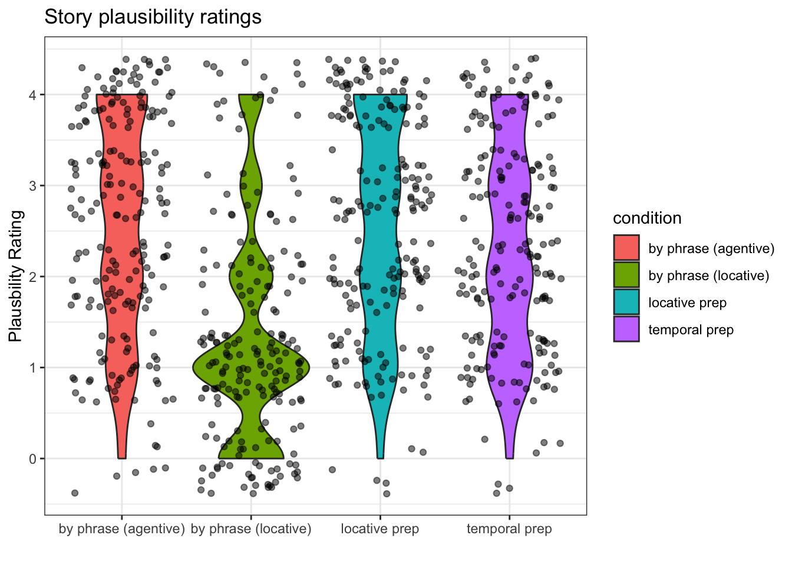
create code
That plot only requires five lines of code. You can do it!! You might want to go one line at a time here.
Line 1: your call to ggplot, data should be p.data, choose appropriate x and y axes.
Line 2: add a geom_violin object. It will need an aes, inside of which you will set fill = to condition
Line 3: add a geom_jitter() object. Inside of it, set alpha to .5.
Line 4: Use labs() to add the same labels you see in the example
Line 5: I used theme_bw() from ggthemes to get the final look.
part 4, still have energy?
We might also want to know the average for each story (rather than each condition). Create a tibble named p.data3 from p.data which includes the mean for plausbility ratings, grouped by both story and condition. After your summary call, use arrange() to sort the data by condition, and then by the mean rating.
p.data3 <- p.data %>%
group_by(story_id, condition) %>%
summarise(mean.plaus = mean(rating), sd.plaus = sd(rating)) %>%
arrange(condition, mean.plaus)## `summarise()` has grouped output by 'story_id'. You can override using the
## `.groups` argument.p.data3## # A tibble: 80 × 4
## # Groups: story_id [20]
## story_id condition mean.plaus sd.plaus
## <chr> <chr> <dbl> <dbl>
## 1 S06 by phrase (agentive) 1.27 1.42
## 2 S02 by phrase (agentive) 2 1
## 3 S05 by phrase (agentive) 2 1.15
## 4 S08 by phrase (agentive) 2 1.15
## 5 S04 by phrase (agentive) 2.1 1.20
## 6 S17 by phrase (agentive) 2.4 1.07
## 7 S20 by phrase (agentive) 2.5 1.18
## 8 S14 by phrase (agentive) 2.64 1.21
## 9 S18 by phrase (agentive) 2.64 1.57
## 10 S01 by phrase (agentive) 2.7 1.16
## # … with 70 more rowsThe following plot uses that data to create a staircase plot of the stories to visualize their relative rankings in the four different conditions:
ggplot(p.data3, aes(y = 1:nrow(p.data3), x = mean.plaus, label = story_id)) +
facet_wrap(. ~ condition, scales = 'free') +
xlim(0,4) +
labs(y = '', x = '', title = 'Stories sorted by mean plausibility') +
geom_text() +
theme_bw() +
theme(axis.ticks.y = element_blank(), axis.text.y = element_blank())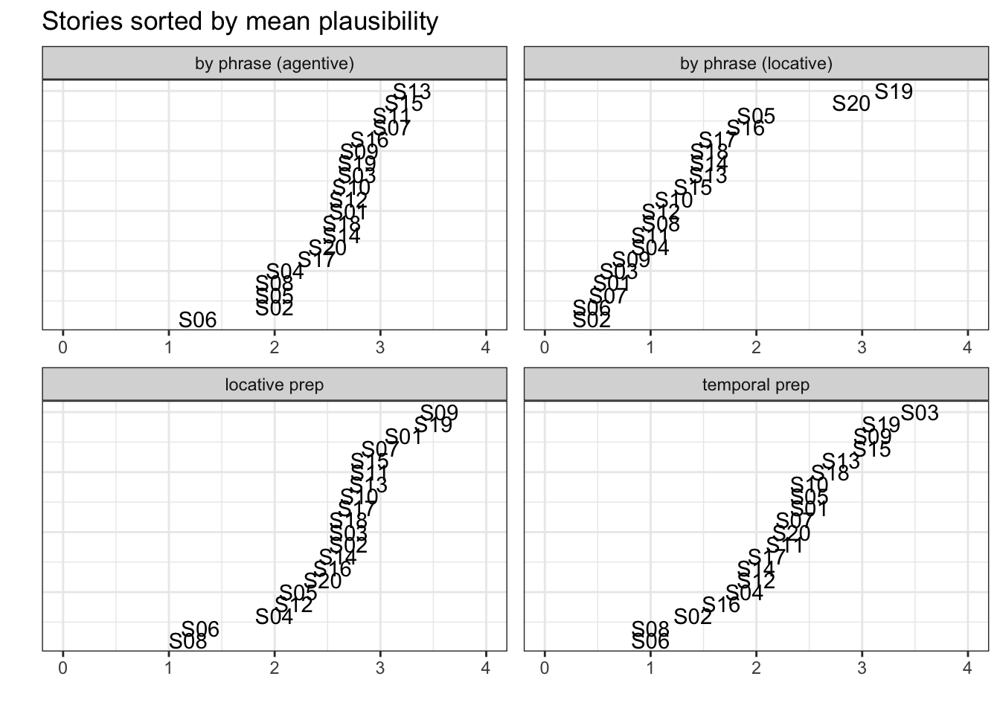
create code
How to make this plot?
Line 1: call ggplot using p.data3. in aes, set x to the mean ratings, and set y to be a range from 1 to the total length of the data. Also include a third argument, label, which is set to the name of the story.
Line 2: Add the function facet_wrap(), which will create the four panels (the facets). Inside facet_wrap(), type . ~ condition, scales = 'free'). The . ~ condition says wrap all variables (indicated by the .) by condition. The scales = free means each facet will have its own y and x axes labels/ticks.
You should see something like this (and if you look at the name of the y axis that should show you how to set the correct y axis length:):
ggplot(p.data3, aes(y = 1:nrow(p.data3), x = mean.plaus, label = story_id)) +
facet_wrap(. ~ condition, scales = 'free') 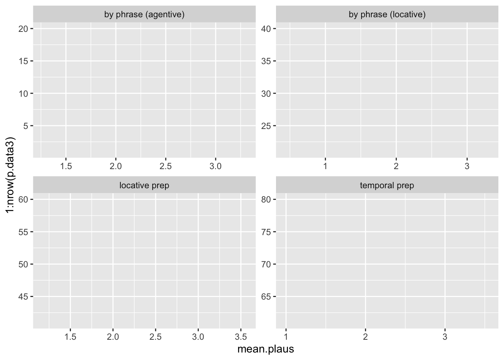
That’s the hard part over. Now, add the following:
- set the y axis limits to be the range of the ratings
- add the appropriate x axis, y axis, and title to match the example
- add a geom_text() geom
- use the theme
theme_bw() - delete the y axes ticks and labels using
theme(axis.ticks.y = element_blank(), axis.text.y = element_blank())